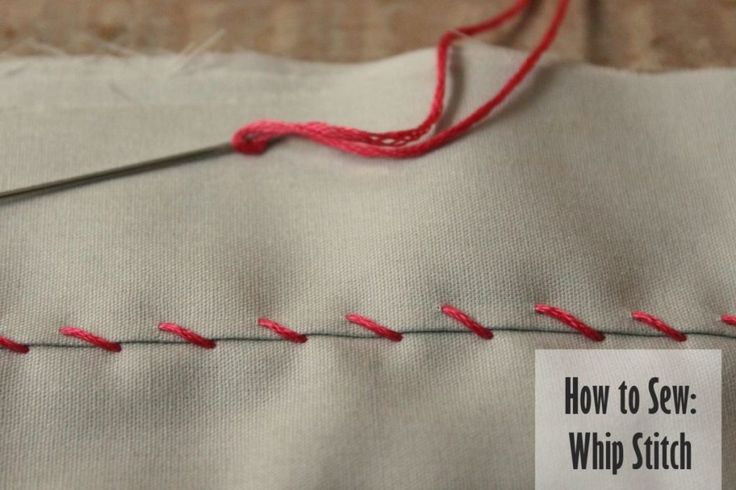
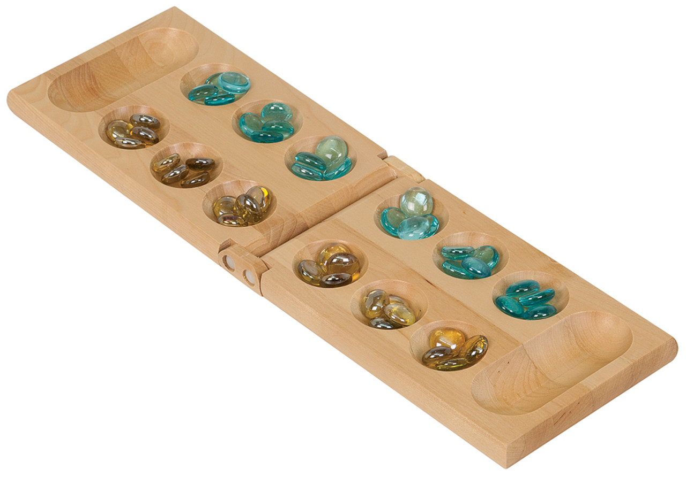

PSEUDOCODING! And Problem Solving
Pseudocode
// Sewing
// Specifically: whip stitching a hole in your shirt
// Jessie Brass (jbrass@ucsc.edu)
// October 2023
// Sewing a stitch: *Note: Make the stitches on the INSIDE of the shirt, the part that will not be seen.*
// Poke a hole through your two pieces of fabric.
// Bring the thread all the way through.
// Poke another hole right next to the first hole.
// Thread your thread all the way through, making sure not to let any excess thread get caught in the loop you just made.
// You have made a stitch! Repeat!
// If your thread runs out:
// Cut the thread from the needle
// Thread another needle (refer to "Thread the needle" until the last step)
// Instead of tying the two ends together, tie them to your original string.
// To finish:
// Make sure you have at least 2.5 inches of thread left.
// Begin making a stitch.
// Before the loop closes, thread your needle through the loop and close the stitch around the thread.
// Do this at least twice for extra security.
// Cut your thread from the needle.
// Done!

// Mancala
// An implementation of the game
// Jessie Brass (jbrass@ucsc.edu)
// October 2023
// initialize the game board
// create a board with 2 rows of 6 pits each (12 pits total)
// Place 4 stones in each pit
// While the game is not over:
// display the current state of the board
// ask the current player to choose a pit (1-6) on their side.
// Pick up all the stones from the chosen pit.
// Distribute the stones one by one, moving counterclockwise and skipping the opponent's store.
// If the last stone lands in the current player's store, they get another turn.
// If the last stone lands in an empty pit on the player's side, they capture that stone and any stone in the opposite pit.
// Add any captured stones to the player's store.
// Check if one player's pits are all empty. If so, the game is over.
// Switch to the other player
// Determine the winner:
//Compare the number of stones in each player's store.
// The player with more stones in their store wins.

Challenge
Pseudocode two different types of processes: a unique everyday task, and a simple game.
Problems
I struggled a bit with the CSS. I tried to change the font family of the heading using class h1 in my CSS file but it didn't work.
Results
My results are pretty solid and thorough. I think my Pseudocode makes sense and includes everything it needs. I used ChatGPT for the Mancala Pseudocode. I hope to comtinue to better understand CSS.